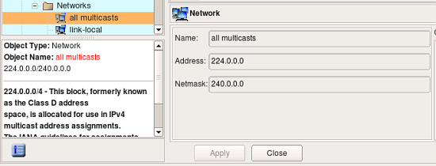
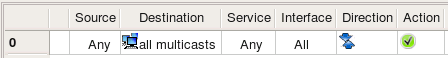
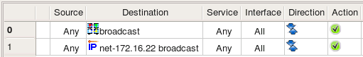
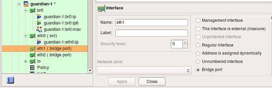

http://www.fwbuilder.org
| Author: vadim@fwbuilder.org http://www.fwbuilder.org |
This article continues the series of articles on Fireall Builder, a graphical firewall configuration and management tool that supports many Open Source firewall platforms as well as Cisco IOS access lists and Cisco ASA (PIX). Firewall Builder was introduced on this site earlier with articles Getting Started With Firewall Builder, Using Built-In Revision Control In Firewall Builder, Using Built-in Policy Installer in Firewall Builder, Using Firewall Object In Firewall Builder. This article demonstrates how Firewall Builder works with objects representing broadcast and multicast addresses.
More information on Firewall Builder, pre-built binary packages and source code, documentation and Firewall Builder Cookbook can be found on the project web site at www.fwbuilder.org. Watch Project Blog for announcements and articles on all aspects of using Firewall Builder.
Some firewall platforms require Firewall Builder to recognize and treat boradcast and multicast addresses in a special way. In particular, iptables processes packets with broadcast and multicast destination addresses in the INPUT chain and Firewall Builder policy compilers should take this into account while generating iptables script.
In order to match broadcast or multicast addresses in the rules, we need to create objects to describe them. The choice of object type to describe broadcast or multicast address depends on whether this is just a single address, a range or a block. Address object is good to define single address, Address Range is good for sets of consequtive addresses, and Network object is good to describe a block. For example, one can use Address object with address "255.255.255.255" to describe a broadcast. Address Range with addresses "224.0.0.5 - 224.0.0.6" would work well to describe two multicast groups used by OSPF. Network object with address "224.0.0.0" and netmask "240.0.0.0" can be used to describe whole multicast address block.
Here are few examples:
Object "all multicasts" is part of the Standard Objects library that comes with the program and describes entire address block allocated for multicasts. Consider simple policy rule that permits all multicasts:
For iptables, this rule translates into the following script:
$IPTABLES -A INPUT -d 224.0.0.0/4 -m state --state NEW -j ACCEPT
The rule went into the INPUT chain because iptables processes multicast in it.
Here is another example, this time it involves broadcast addresses. Interface inside of the test firewall has address 172.16.22.1 with netmask 255.255.255.0. This defines subnet 172.16.22.0/255.255.255.0 with broadcast address 172.16.22.255. We create Address object with the name "net-172.16.22 broadcast" and address "172.16.22.255" and use it in the destination field of a policy rule. Another rule in the same example will match broadcast address "255.255.255.255"; an Address Range Object that defines this address is present in the Standard Objects library under the name "broadcast". Here are the rules:
these two rules translate into the following script for iptables:
# Rule 0 (global)
#
$IPTABLES -A INPUT -d 255.255.255.255 -m state --state NEW -j ACCEPT
#
# Rule 1 (global)
#
$IPTABLES -A INPUT -d 172.16.22.255 -m state --state NEW -j ACCEPT
Both rules went into INPUT chain as expected.
Compilers treat broadcast and multicast addresses differently if the firewall object describes bridging firewall. In this case checkbox "Bridging firewall" should be turned on in the firewall settings dialog and one or more interface objects should be marked as "Bridge port":
Now the rule that should match broadcast destination address will be treated differently:

this produces the following iptables commands:
$IPTABLES -A FORWARD -d 172.16.22.255 -m state --state NEW -j ACCEPT
$IPTABLES -A INPUT -d 172.16.22.255 -m state --state NEW -j ACCEPT
Rules went into both INPUT and FORWARD chains because bridging firewall passes broadcasts through, but at the same time accepts them as packets headed for itself as well. Since the rule did not specify which interface it should look at, fwbuilder assumed that generated rule should inspect packets crossing all interfaces, both bridge ports and "normal" ones and therefore placed rule in both INPUT and FORWARD chains.